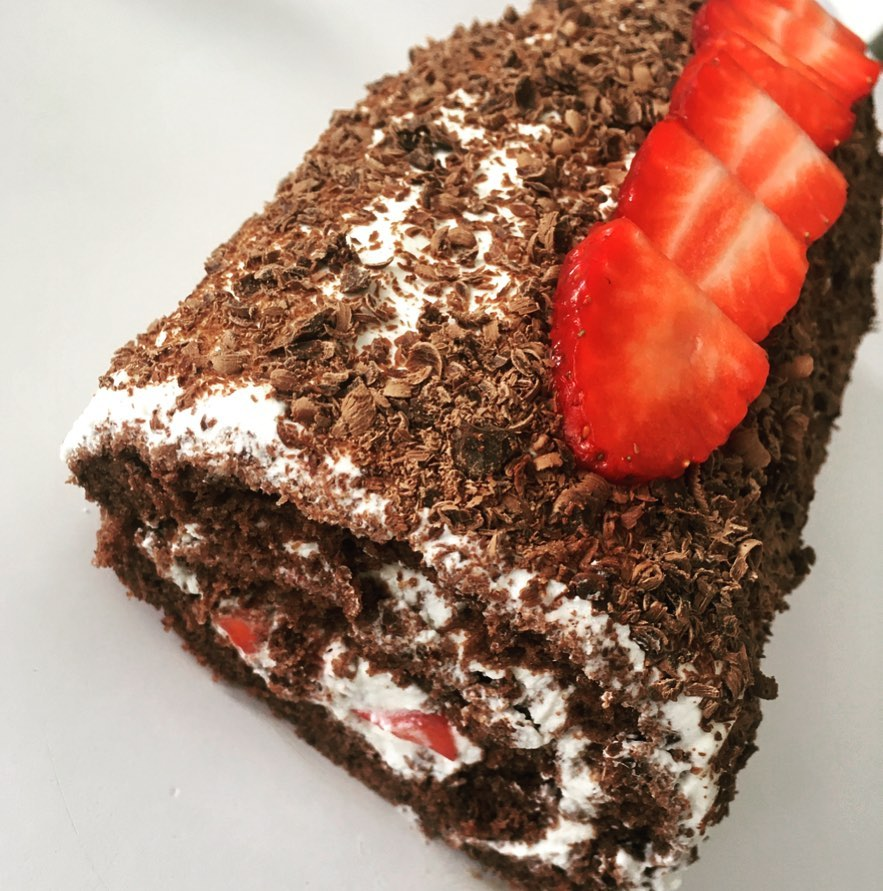

Kakaová roláda podľa @mom_chris.tina — Normy Jedál
Kakaová roláda se šlehačkou, čokoládou a jahodami 🍓🍫🍰
Budete potřebovat:
4ks vajec
4PL cukru krystal
4PL polohrubé mouky
2PL teplé vody
2PL oleje
2PL kakaa
Na náplň:
250ml smetany ke šlehání
100g čokolády nastrouhané na hrubo
Jahody
Postup:
Vajíčka vyšleháme s cukrem, až zesvětlají a nabudou. Šleháme cca 5-10 minut. Nakonec zašleháme vodu i olej - oboje přiléváme tenkým pramínkem. Mouku i kakao prosejeme a do vyšlehaných vajíček postupně vmícháme, aby nám vzniklo těsto.
Troubu předehřejeme na 180 °C. Plech vyložíme pečícím papírem, nalijeme na něj těsto, povrch uhladíme stěrkou a dáme péct na 8-10 minut.
Ještě teplý korpus zamotáme do roláda i s pečícím papírem a necháme vychladnout.
Mezitím si šlehačku vyšleháme do tuha. Roládu rozvineme, potřeme šlehačkou, posypeme nastrouhanou čokoládou a kousky jahod a opět zamotáme.
Ozdobíme dle fantazie a dáme chladit.😋
#bakingtime #kakaovarolada #zakusek #necokekave #neconazub #dessert #yummy #strawberry #chocolate #cream #kakao #jahody #cokolada #pecenijeradost #homemade #bakigwithlove